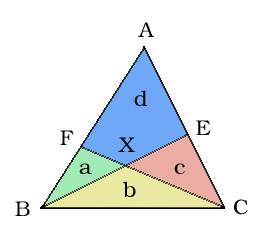

|
The king of Geometry-Land is in deep trouble. He has three sons who use to quarrel all the time. The king tried many different policies to stop them, but in vain. So, the king became anxious.
“How about dividing the kingdom?” the king thought to himself. So, he called the advisors and described his plan. They opened the map…

The kingdom is triangular. The king denoted ‘A’, ‘B’, ‘C’ for the three vertices. He drew a line from B to E (E is any point in segment AC) and a line from C to F (F is any point in segment AB). The intersection of BE and CF was denoted by X.
Now they got four areas – a (triangle BFX), b (triangle BCX), c (triangle CEX) and d (quadrilateral AEXF). The king decided to give these areas - a, b, c to his three sons. And the area d would be the king’s new kingdom.
You
are the head advisor. The king will tell you the value of a, b and c.
You have to find the area d. If you can’t determine the
value of d
then report it.
The input file contains several sets of inputs. The total number of sets will be less than 1000. The description of each set is given below:
Each set starts with three non-negative real numbers a, b, c (separated by spaces) as defined in the statement.
The input will be terminated by the set where a = -1. And this set should not be processed.
For each set in the input,
you should first print the set number starting from 1. Then in the next line
print d (the area of the king after
the division) rounded to 4 decimal points or ‘Poor King!’ (without
the quotes) if you can’t determine.
Check the sample input-output for more details. Output should be formatted like the sample output.
|
Sample Input |
Output for Sample Input |
1 2 12 4 21 3 3-1 0 0 |
Set 1:2.0000Set 2:4.0000Set 3:5.0000 |
Problem Setter: Tanvir Mahmud
Moderator & Alternate Solution: Jane Alam Jan